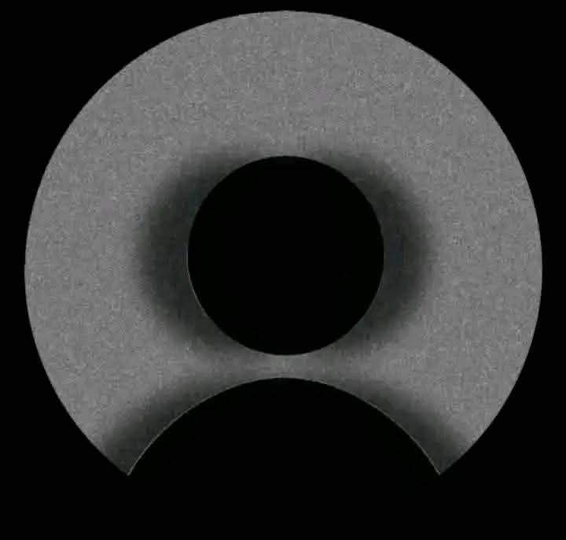

المعلمة رحمة أحمد
مراجعة وتثبيتتهتم بمتابعة الحفظ والمراجعة، وتساعد على تثبيت المعلومات بشكل مستمر.
- مراجعة المحفوظ السابق
- خطة تثبيت متدرجة
- متابعة وفق مستوى الطالب
 صُحبة القرآن
صُحبة القرآن
❧ خطوتك مع أهل القرآن ❧
لكل رحلة بداية، ومع المحفّظ المناسب تصبح خطواتك أكثر تنظيمًا وثباتًا.
تعرّف على خيارات المتابعة، واستعد لبدء رحلتك مع كتاب الله الكريم.
اختر المحفّظ المناسب لك، ثم أرسل طلبك لتحديد التفاصيل.

تهتم بمتابعة الحفظ والمراجعة، وتساعد على تثبيت المعلومات بشكل مستمر.
خبرة في تعليم القرآن الكريم ومتابعة الطلاب بأسلوب مبسط وواضح.
تقدم متابعة مميزة مع التركيز على الفهم والتثبيت بأسلوب هادئ ومشجع.
يركز على تحسين التلاوة وبناء أساس قوي في أحكام التجويد.
أرسل طلب الالتحاق، ووضّح مستواك وهدفك، ليتم تحديد الخطوة المناسبة لك.
♙ تقديم طلب الالتحاق